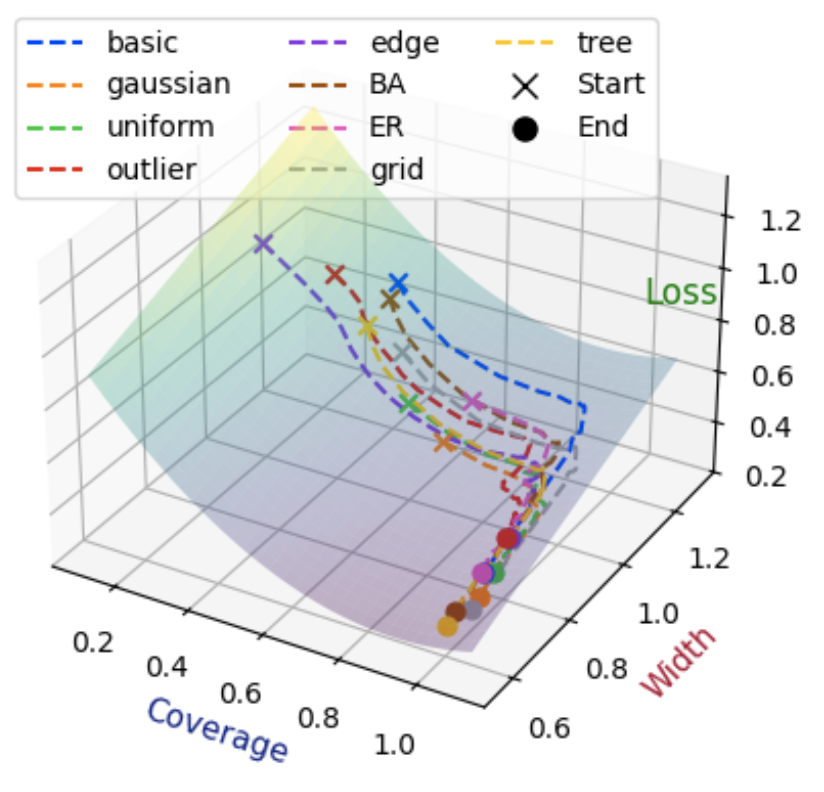

Publications
Journal articles and conference papers.
* Equal contribution. † Corresponding author
International Publications
2026

ICML 2026Graph LearningUncertainty
Quantile-Free Uncertainty Quantification in Graph Neural Networks
Soyoung Park, Hwanjun Song, and Sungsu Lim†
International Conference on Machine Learning, 2026
Figure to be added
SIGIR 2026
DisCoRec: Disentangled Conformity-aware Recommendation with LLM-Guided Multi-View Learning
Minkyung Song, Soyoung Park†, and Sungsu Lim†
SIGIR, 2026
Figure to be added
AAAI 2026
MV-LLMRec: Multi-View Representation Learning with Large Language Models for Recommendation
Minkyung Song, Soyoung Park, and Sungsu Lim†
AAAI, 2026
Figure to be added
WACV 2026
MR-Pruner: Training-free Multi-resolution Visual Token Pruning for Multi-modal Large Language Models
Seunghoon Han, Hyewon Lee, Soyoung Park, Jong-Ryul Lee†, and Sungsu Lim†
WACV, 2026
2025
Figure to be added
PeerJ Computer Science 2025
Dynamic Periodic Event Graphs for Multivariate Time Series
Soyoung Park, Hyewon Lee, and Sungsu Lim†
PeerJ Computer Science, 2025
Figure to be added
CIKM 2025
FnRGNN: Distribution-aware Fairness in Graph Neural Network
Soyoung Park and Sungsu Lim†
CIKM, 2025
Figure to be added
PAKDD 2025
Zero-shot Industrial Anomaly Segmentation with Image-Aware Prompt Generation
Soyoung Park*, Hyewon Lee*, Mingyu Choi, Seunhoon Han, Jong-Ryul Lee†, Sungsu Lim†, and Tae-Ho Kim†
PAKDD, 2025
Figure to be added
WWW Workshop 2025
Diverse Knowledge Selection for Enhanced Zero-shot Visual Question Answering
Seunhoon Han*, Mingyu Choi*, Hyewon Lee, Soyoung Park, Jong-Ryul Lee†, Sungsu Lim†, and Tae-Ho Kim†
WWW Workshop, 2025
Domestic Publications
KDBC 2025대규모 언어 모델을 활용한 멀티 뷰 학습 기반의 추천 시스템
송민경, 박소영, 임성수†
KSC 2024비볼록 벌점화 분위수 회귀를 통한 그래프 신경망 신뢰성 향상
박소영, 임성수†
KSC 2024도로 환경에서 LLM 기반 제로샷 이상 분할을 위한 방법론
이혜원, 박소영, 송민경, 임성수†
KDBC 2023사전학습 언어 모델을 이용한 법인세 조세심판 결정 예측 모델 연구
배은형, 박소영, 임성수†
Bibliographic details: personal portfolio. ICML figure: DISL publication listing.